Welcome to Barbara Hanna's Website!
Hi! My name is Barbara Hanna. I'm from Brazil and currently studying Computer Programming at Sault College in Canada. I'm passionate about technology, creativity, and everything related to digital development.
In my free time, I love paint-by-numbers art, cooking new recipes, and going to the movies — my favorite film is Interstellar. I'm also deeply connected to nature, the beach, and peaceful environments that inspire well-being.
My Hobbies
Creative and relaxing activities bring me joy:
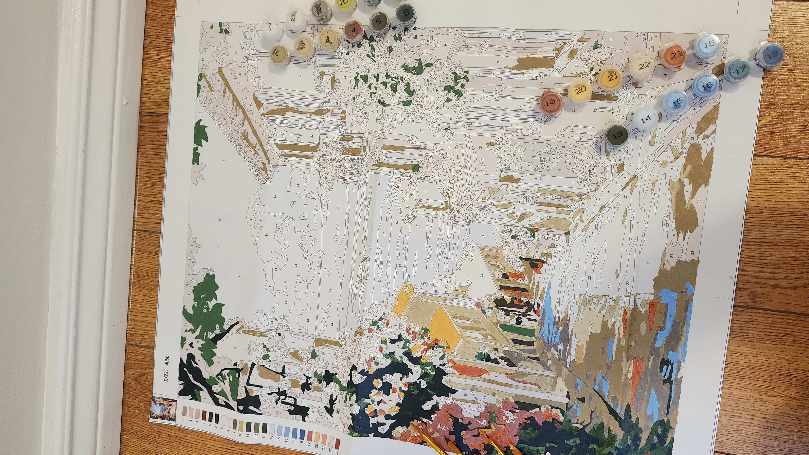- Paint-by-numbers — a peaceful way to express creativity
- Cooking — I love experimenting with flavors and recipes
- Going to the movies — especially Interstellar
| Term | Code | Name | Hours/Week |
|---|---|---|---|
| Fall | CSD121 | Programming Concepts I | 4 |
| Fall | CSA103 | Business Applications I | 4 |
| Fall | CSD124 | Systems Analysis and Design | 3 |
| Fall | CSD123 | Databases I | 4 |
| Fall | CSD112 | Introduction to Web Development | 4 |
| Fall | CSD125 | Emerging Technology | 3 |
| Total | 22 |
My Favourite Things
Favourite Games

 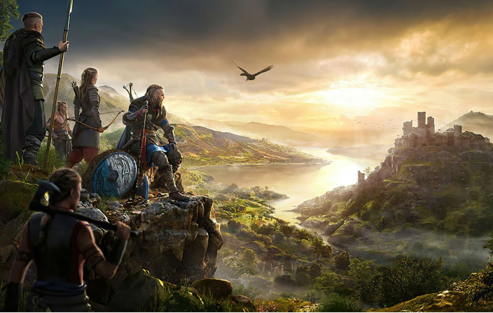
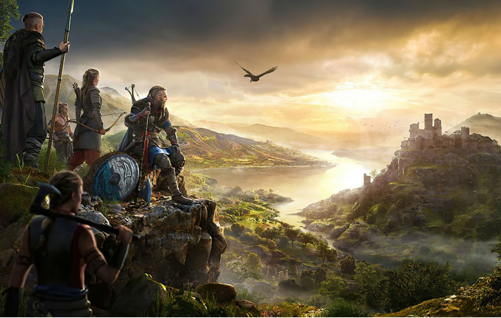
- Mario Bros
- Rise of the Tomb Raider
- Assassin's Creed® Valhalla
Favourite Music Artists
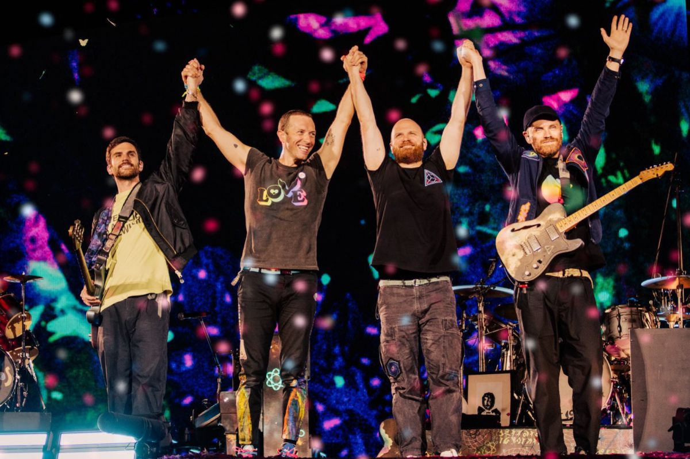- Jung Kook
- Taylor Swift
- Coldplay
Favourite Series & Films
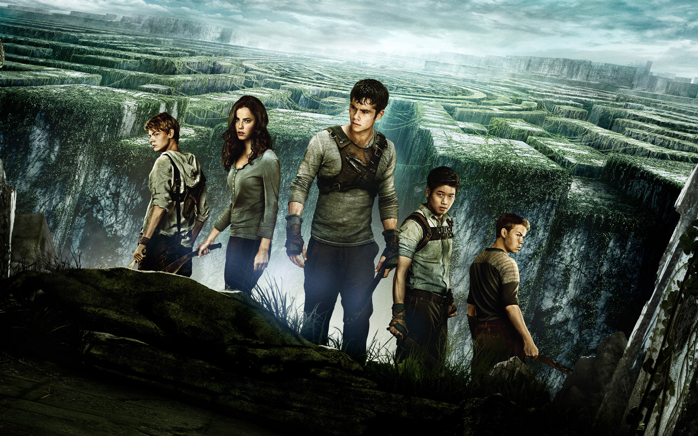 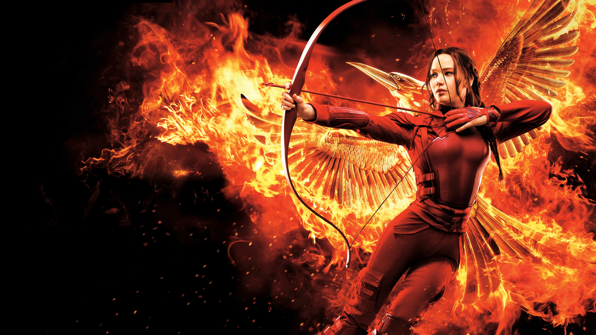
- Maze Runner
- The Hunger Games
- Harry Potter
Favourite Authors
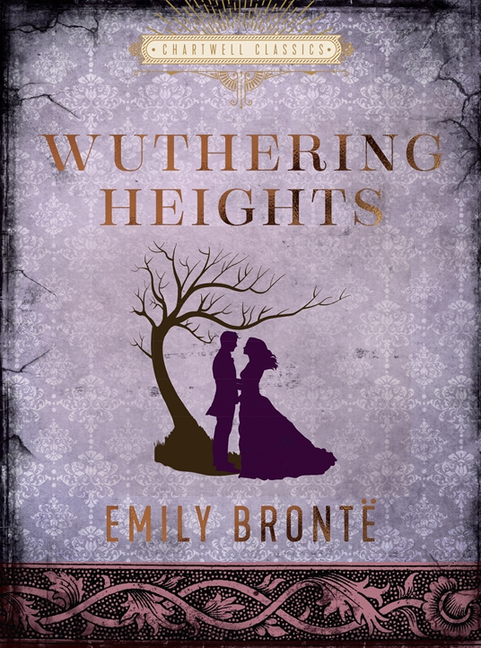 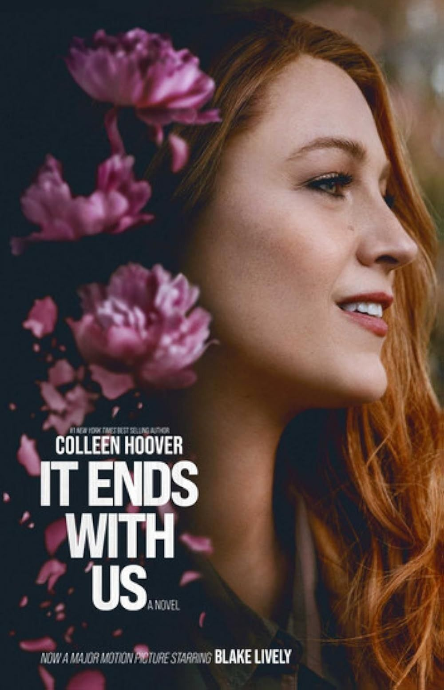- Jenny Han
- Emily Brontë
- Colleen Hoover
My Pets
I have two amazing companions who bring joy to my life:
-
Tessa — a 2-year-old Shih Tzu, affectionate and full of personality.
-
Belly — a 2-month-old Cocker Spaniel, curious and incredibly cute.
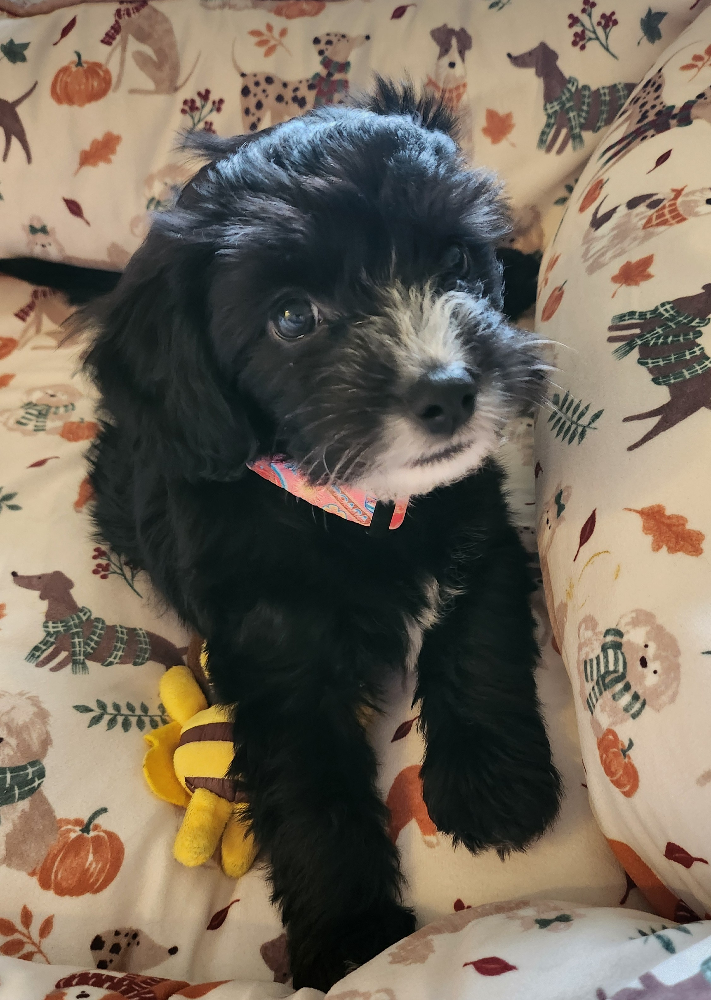
Their names were inspired by characters from books I love — Tessa comes from The Infernal Devices by Cassandra Clare, and Belly from The Summer I Turned Pretty by Jenny Han.
Me and Tessa at the Park
This moment reflects so much of what I love: nature, peace, and the company of my Shih Tzu, Tessa.

Places I've Visited in Sault Ste. Marie
Since arriving in Canada, I've explored many beautiful spots in Sault Ste. Marie. Here are some of my favorites:
-
Waterfront Boardwalk — A scenic walk along the river, perfect for relaxing and watching the
sunset.
-
Bellevue Park — A spacious park with gardens, trails, and picnic areas. One of my favorite
places to walk with Tessa.
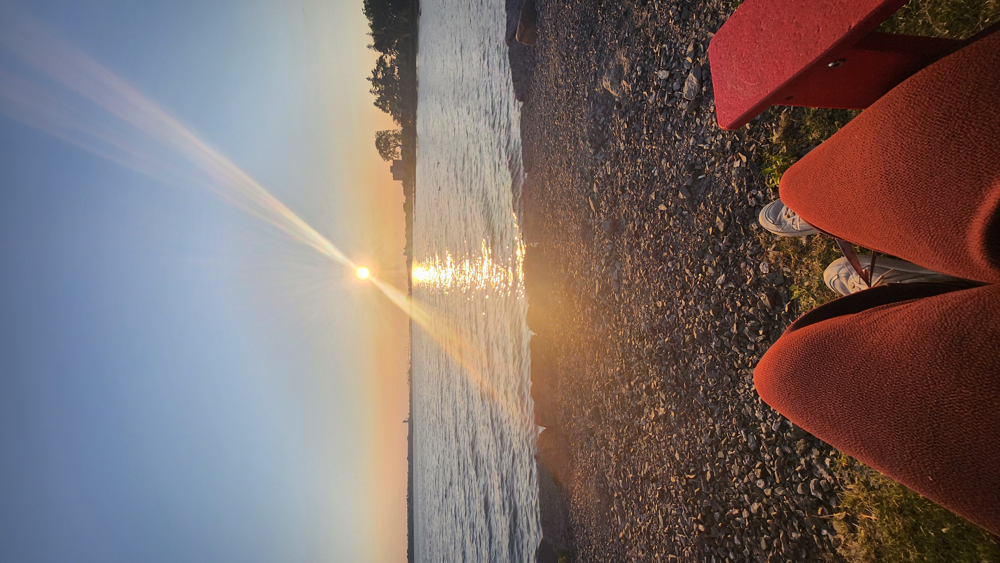 -
Kinsmen Park — A peaceful green space, great for walks and outdoor moments.
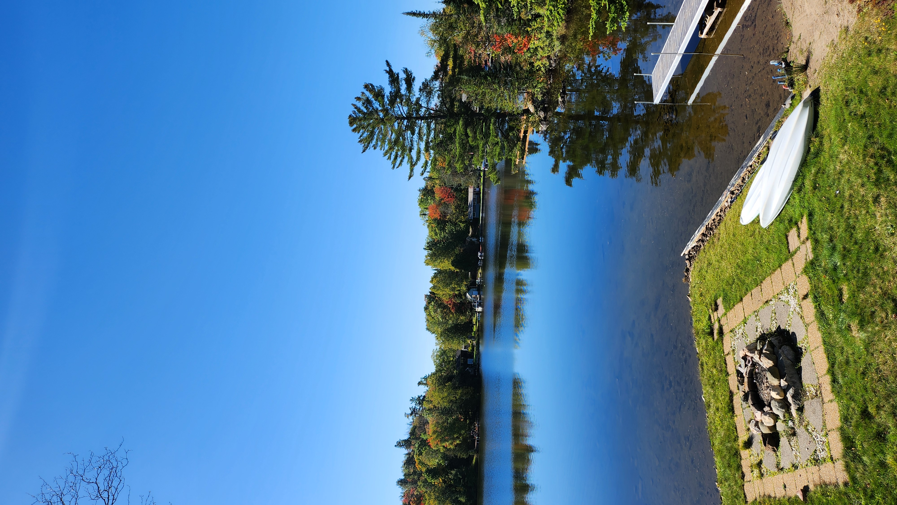 -
Fort Creek Conservation Area — A natural area with trails and stunning views. Ideal for
nature lovers.
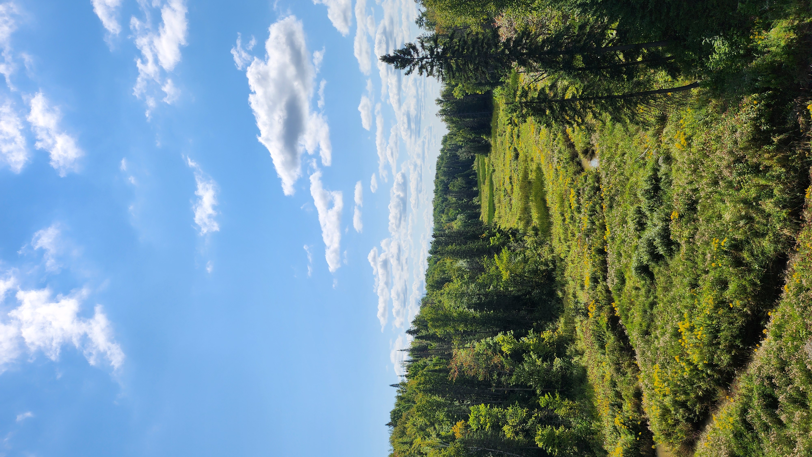 -
Pointe Des Chenes Crescent — A beautiful beach with lake views, perfect for sunny and
peaceful days.
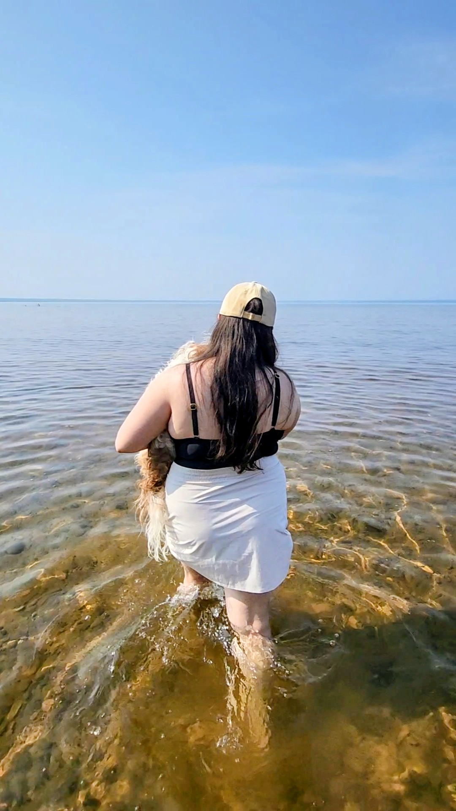
Haiku
Fragrant moonlight
The scent of flowers arrives
Invisible beauty
by